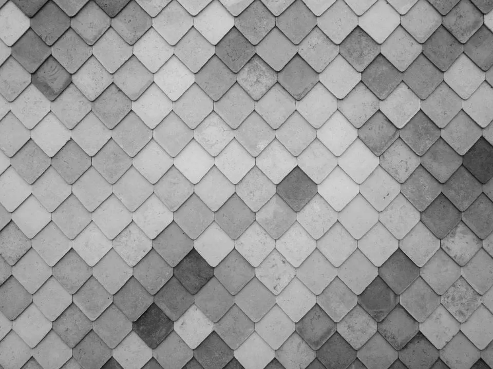
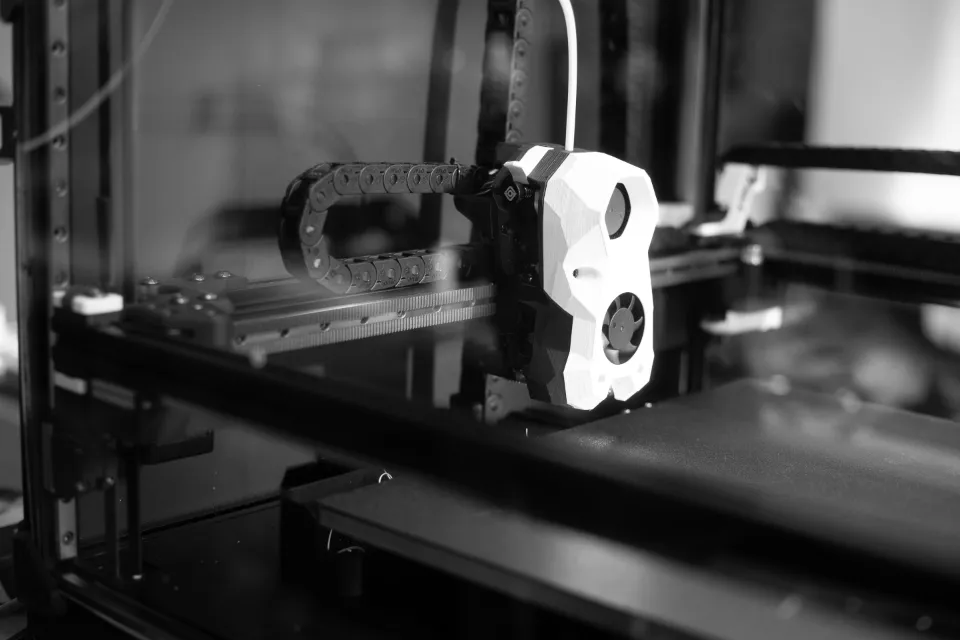

Special paper & finishingJingumae, Shibuya — Tokyo
Paper
is the
media.紙そのものが、メディアになる。
デザイナーのための特殊紙・特殊加工の印刷所。
180種類以上の紙と加工を、1部から試作できます。
No.001Trim size 960 × 1379 px
Indexサービス
特殊紙の名刺から作品集まで。紙と加工を組み合わせ、1部の試作から量産まで対応します。
-
01
STATIONERY
特殊紙の名刺・ステーショナリー
180種の紙から。厚紙の貼り合わせも。 ¥6,600〜名刺 50枚 -
02
RISOGRAPH
リソグラフ印刷
蛍光ピンクなど特色18色。版ずれの味を。 ¥4,400〜A4・2色・30枚 -
03
BOOK & CATALOG
作品集・カタログ
1部の試作から。糸かがり・PUR製本も。 ¥22,000〜B5・32ページ・10部 -
04
FINISHING
特殊加工
型抜き・エンボス・小口染め・ミシン目。 ¥8,800〜型代込み・100枚
※価格は税込の目安です。架空の印刷会社のデモサイトのため、実際のサービスではありません。
Works紙と加工の見本
-

Emboss / 300g Cotton - Risograph蛍光オレンジ × ティール 2色刷り
- Lookbook / PUR binding
- Die-cutロゴの形に型抜きしたショップカード
- 180+扱っている特殊紙の種類
About
紙そのものが、
メディアになる。
KERN PRESS は、デザイナーとアートディレクターのための印刷所です。画面の上では伝わらない紙の厚み、手ざわり、インクののり方まで、デザインの一部として扱います。
- Papers
- 180+
- Min. lot
- 1部
- Riso colors
- 18
